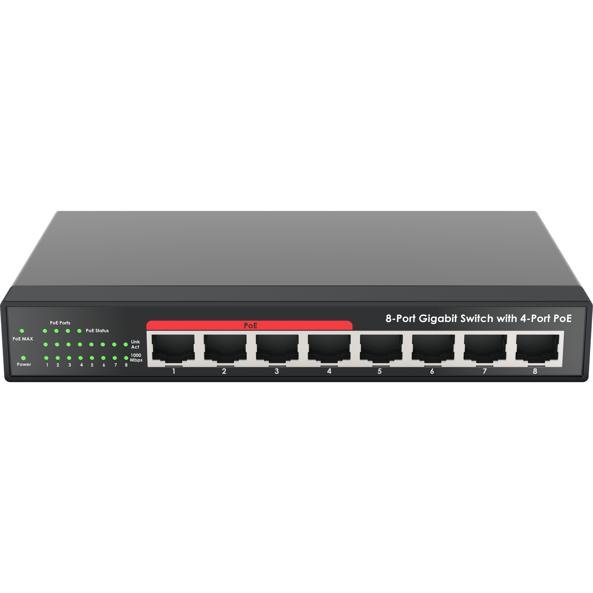

Switch
Pengertian Switch
Switch adalah perangkat jaringan komputer yang berfungsi untuk menghubungkan beberapa perangkat (seperti komputer, printer, atau access point) dalam sebuah jaringan lokal (LAN) secara pintar.
Berbeda dengan Hub yang mengirimkan paket data ke semua komputer, Switch bekerja lebih efisien dengan membaca MAC Address perangkat tujuan sehingga data dikirimkan langsung secara tepat tanpa menyebabkan tabrakan data (collision).
Spesifikasi Umum
- Memiliki pilihan port: 5, 8, 16, 24, hingga 48 Port RJ45.
- Kecepatan Transfer data: Fast Ethernet (10/100 Mbps) atau Gigabit Ethernet (10/100/1000 Mbps).
- Mendukung tipe Switch: Unmanaged Switch (langsung pakai) atau Managed Switch (bisa dikonfigurasi VLAN).
- Mendukung fitur Auto-MDI/MDIX untuk deteksi otomatis jenis kabel jaringan.
Keunggulan Switch
- Kinerja Lebih Cepat: Mengirim data langsung ke port tujuan, menghemat bandwidth jaringan.
- Keamanan Lebih Baik: Paket data tidak disebar ke seluruh komputer jaringan sehingga meminimalisir risiko penyadapan data.
- Bebas Tabrakan Data: Mendukung komunikasi dua arah (Full-Duplex) yang menghilangkan tabrakan transmisi data.
Aplikasi / Implementasi Lapangan
Dalam jaringan TKJ, Switch umumnya digunakan di tempat-tempat seperti:
- Laboratorium Komputer Sekolah untuk menghubungkan komputer praktikum siswa ke server lokal.
- Jaringan perkantoran guna membagi koneksi data utama ke seluruh divisi karyawan.
- Infrastruktur pusat data (Data Center) yang membutuhkan pembagian segmen jaringan yang aman melalui VLAN.
Sumber Materi
Materi pembelajaran ini disusun berdasarkan standar kompetensi keahlian Teknik Komputer dan Jaringan (TKJ):
- Buku Teks Kurikulum Merdeka - Dasar-Dasar Teknik Jaringan Komputer dan Telekomunikasi.
- Dokumentasi Resmi Standar Perangkat Jaringan Lokal IEEE 802.3.